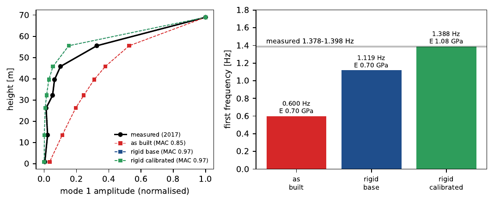

Phra Chedi Chai Mongkhon, Ayutthaya
A 70 m brick stupa built from a laser-scan table and photographs. Against ambient vibration measurements (1.378–1.398 Hz), the model matches the first frequency with a rigid base and a masonry modulus of 1.08 GPa, with a mode-shape correlation of 0.97.